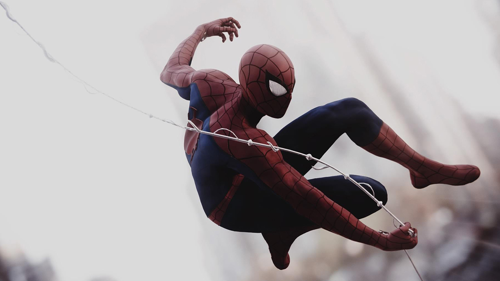

About Spider Man
When bitten by a genetically modified spider, a nerdy, shy, and awkward high school student gains spider-like abilities that he eventually must use to fight evil as a superhero after tragedy befalls his family. Based on Marvel Comics' superhero character, this is a story of Peter Parker who is a nerdy high-schooler.
This is Spider Man web-slinging around New York City
Characteristics
- Genius-level intellect.
- Proficient scientist and inventor.
- Superhuman strength, speed, durability, agility, stamina, reflexes/reactions, coordination, balance and endurance.
- Utilizes wrist web-shooters to shoot spiderweb material.
Spider Man's Friends
Spider Man's has many Friends but his best friend would be Tony Stark aka Iron Man. CLick on the links below to learn more about them.